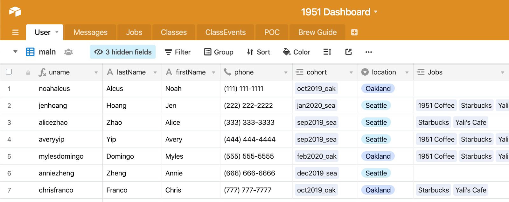
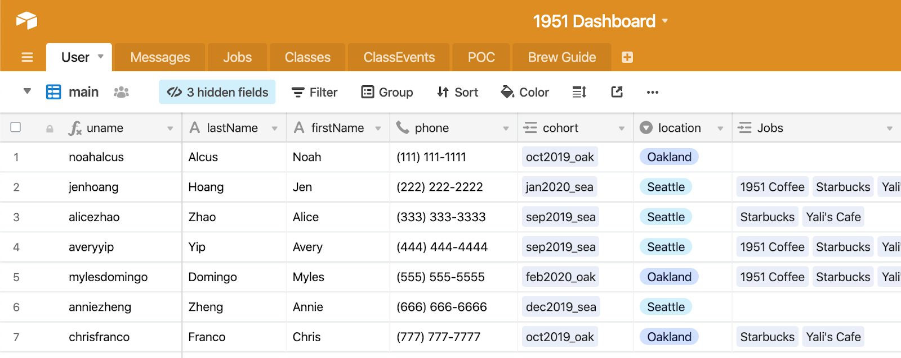

Duration: 3 months (MVP), ongoing project
The organization hosts Barista Training Programs throughout the year. Upon completion of the program, a Recruitment Specialist works with graduates to guide them through job opportunities and interview prep so that they can smoothly enter the coffee industry.
1951 Coffee Company does not have an proper organization or communication platform to efficiently run their program. Any time there is an upcoming event or important message that needs to be relayed to the students, the program admins must manually type in the phone number of each individual trainee, sending the same text message to each participant in their program. The same tedious process occurs when the Recruitment Specialist reaches out to graduates regarding job opportunities, with the text message history acting as the only record of participants' job interests.
Our team created a platform that provides access to community messaging, job opportunities, upcoming class events, and barista guides. This mobile application is offered on Android and iOS. As of now, the admin dashboard is built entirely on Airtable, where admins can manage users, send messages, and update information through various forms and tables. As the project progresses, we aim to build a separate webpage for admin usage.
 
